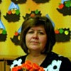

Дошкольное отделение школы № 492
В 2015 году 43% первоклассников Школы № 492 пришли из дошкольного отделения.
- Кленовый бульвар, 13к4
- Затонная улица, 2к3
- Затонная улица, 10к2
- Затонная улица, 8к3
- Затонная улица, 7к2
Воспитатели
Воспитатели, которых чаще всего благодарят родители (отзывы и профили сотрудников взяты с официального сайта школы):|
Воспитатель
Савина Татьяна Вадимовна
4 благодарности |
 Воспитатель
Кудрова Татьяна Николаевна
Воспитатель
Кудрова Татьяна Николаевна
2 благодарности |
Старший воспитатель
Василькова Александра Станиславовна
2 благодарности |
Муз. рук.
Левицкая Зоя Ивановна
1 благодарность |
|
Воспитатель
Ульянычева Елена Владимировна
1 благодарность |
Помощник воспитателя
Крылова Лариса Григорьевна
1 благодарность |
Руководитель
Жарова Наталья Викторовна
1 благодарность |

Воспитатель
Авдошина Марина Владимировна
1 благодарность |
|
Воспитатель
Мурзина Ольга Геннадьевна
1 благодарность |
Завхоз
Мартынова Татьяна Викторовна
1 благодарность |
Отзывы
Данные собраны c официального сайта школы и через форму для отзывов.
Добрый день. Спасибо всему коллективу детского сада "Сказка" , за доброе и чуткое отношение к деткам. Заведующей Ольге Николаевне за отзывчивость и профессионализм. За то что под её чутким руководством сплотился крепкий коллектив, который старается обеспечить каждому ребёнку индивидуальный подход и развитие. За организацию праздников, театров и концертов классической музыки. Наших деток развивают во всех областях . Большое спасибо нашим поварам, за вкусную и здоровую пищу и разнообразное меню. Моя " малоежка" с удовольствие все ест и хвалит.
Отдельное спасибо воспитателю 2 группы Бабаян Седе Робертовне . Наши детки целый день находятся в дружелюбной домашней атмосфере. Под руководством Седы Робертовны наши детки постоянно заняты: рисуют, лепят ,читают, занимаются аппликацией, делают подделки, высаживают растения, играют в футбол...наши дети не только познают окружающий мир, но и растут с пониманием, что такое дружба, доброта и любовь, хорошие и плохие поступки, фантазировать и творить. У неё особое отношение к каждому ребёнку, спасибо вам за профессионализм, чуткое отношение, доброту м теплоту, индивидуальный подход к каждой семье.
Отдельное спасибо и няне Татьяне Николаевне. Мы часто не дооценивает и её вклад в наших деток. Добрая, отзывчивая, ответственная. Под её чутким взглядом наши детки всегда чистенькие, в группе чистота и порядок, на прогулку всегда все одето, завязано, пристегнуто.
Большое вам спасибо!!! я каждый день оставляю свою дочь в надежных руках. Спасибо за Вашу колоссальную работу, за Ваше искренние отношение к ней, за любовь и заботу о наших детях. За важный вклад в развитие наших детей
Отдельное спасибо воспитателю 2 группы Бабаян Седе Робертовне . Наши детки целый день находятся в дружелюбной домашней атмосфере. Под руководством Седы Робертовны наши детки постоянно заняты: рисуют, лепят ,читают, занимаются аппликацией, делают подделки, высаживают растения, играют в футбол...наши дети не только познают окружающий мир, но и растут с пониманием, что такое дружба, доброта и любовь, хорошие и плохие поступки, фантазировать и творить. У неё особое отношение к каждому ребёнку, спасибо вам за профессионализм, чуткое отношение, доброту м теплоту, индивидуальный подход к каждой семье.
Отдельное спасибо и няне Татьяне Николаевне. Мы часто не дооценивает и её вклад в наших деток. Добрая, отзывчивая, ответственная. Под её чутким взглядом наши детки всегда чистенькие, в группе чистота и порядок, на прогулку всегда все одето, завязано, пристегнуто.
Большое вам спасибо!!! я каждый день оставляю свою дочь в надежных руках. Спасибо за Вашу колоссальную работу, за Ваше искренние отношение к ней, за любовь и заботу о наших детях. За важный вклад в развитие наших детей
От всей души хотим выразить огромную благодарность нашим любимым воспитателям СП № 1 "Акварелька" группы № 1, Савиной Татьяне Вадимовне и Куликовой Любови Алексеевне!!! Большое Вам СПАСИБО за чуткое отношение, заботу, внимание, теплоту и доброту к каждому ребёнку. Хотим отметить Ваш высокий профессионализм, умение осуществить индивидуальный подход к каждому ребёнку. Воспитательный процесс в группе организован таким образом, что учитываются все мелочи повседневной жизни в социуме, в семье и в коллективе.Спасибо за творческий подход в развитии наших детей, инициативность и энтузиазм, за всесторонние развитие наших деток и нескончаемые идеи, которые делают будни наших малышей увлекательными и интересными! Дети любят вас и это говорит о многом!
Каждое утро наши дети с улыбкой бегут в сад, где их ждут любимые воспитатели. В нашей группе царит комфортная и доброжелательная атмосфера благодаря пониманию и равноправию. Дети всегда чистые и опрятные, с восторгом рассказывают о проведённом дне, показывают свои поделки.
На Ваших плечах была первая адаптация наших детей к детскому саду. Спасибо Вам огромное, именно ВЫ помогали нашим деткам чувствовать себя в саду спокойно, научили детей дружить, играть друг с другом, делать свои "первые самостоятельные шаги".
Спасибо за постоянные экспозиции детских рисунков и поделок, благодаря чему можно оценить успех наших детей в том или ином творчестве, за оформление тематических выставок. Вы всегда стремитесь вовлечь в эту работу и нас, родителей, тем самым побуждая к совместной творческой деятельности с детьми. Спасибо и за интересные творческие занятия, мероприятия.
Благодаря Вам наши дети ежедневно познают новое, достигают положительных результатов и мы в свою очередь гордимся их достижениями.
Нам приятно знать, что наши дети в Ваших надёжных руках, а детский сад стал для них вторым домом.
Вы ежедневно встречаете наших детей с улыбкой, а мы в свою очередь оставляем их в саду со спокойным сердцем, так как уверены, что наши дети в самых лучших, заботливых и надёжных (повторимся ещё раз!) руках!!!
Татьяна Вадимовна и Любовь Алексеевна! Примите слова искренней благодарности от всех родителей 1-ой группы за Ваш нелёгкий труд и любовь к нашим детям!
Каждое утро наши дети с улыбкой бегут в сад, где их ждут любимые воспитатели. В нашей группе царит комфортная и доброжелательная атмосфера благодаря пониманию и равноправию. Дети всегда чистые и опрятные, с восторгом рассказывают о проведённом дне, показывают свои поделки.
На Ваших плечах была первая адаптация наших детей к детскому саду. Спасибо Вам огромное, именно ВЫ помогали нашим деткам чувствовать себя в саду спокойно, научили детей дружить, играть друг с другом, делать свои "первые самостоятельные шаги".
Спасибо за постоянные экспозиции детских рисунков и поделок, благодаря чему можно оценить успех наших детей в том или ином творчестве, за оформление тематических выставок. Вы всегда стремитесь вовлечь в эту работу и нас, родителей, тем самым побуждая к совместной творческой деятельности с детьми. Спасибо и за интересные творческие занятия, мероприятия.
Благодаря Вам наши дети ежедневно познают новое, достигают положительных результатов и мы в свою очередь гордимся их достижениями.
Нам приятно знать, что наши дети в Ваших надёжных руках, а детский сад стал для них вторым домом.
Вы ежедневно встречаете наших детей с улыбкой, а мы в свою очередь оставляем их в саду со спокойным сердцем, так как уверены, что наши дети в самых лучших, заботливых и надёжных (повторимся ещё раз!) руках!!!
Татьяна Вадимовна и Любовь Алексеевна! Примите слова искренней благодарности от всех родителей 1-ой группы за Ваш нелёгкий труд и любовь к нашим детям!
Добрый день! Мой сын Макаров Кирилл в этом году покидает родной детский сад 2248 и группу 2 "Лучики" СП 5 Дельфиненок. Он пришел в эту группу совсем малышом и провел прекрасные 5 лет в этом втором доме. Прежде всего хочется поблагодарить воспитателей Татьяну Викторовну и Марину Александровну за их труд. Они по-настоящему создают уют, теплоту и домашнюю ауру для малышей. Не перестаю удивляться их терпению, самообладанию и такой любви к этой трудной профессии воспитателя. Приходя в садик за Кириллом, я всегда наблюдаю, с каким интересом проводят время ребята за играми и занятиями, находясь в группе или на прогулке. Хочу добавить слова благодарности нашей нянечке Татьяне Владимировне за заботу и опеку малышей. Труд нянячек в детском саду на первый взгляд не так заметен родителям, но на деле помощь воспитателям в домашнем комфорте для детей в детском саду в группе колоссален. А наш руководитель физкультуры Вера Аркадьевна делает из маленьких ребят больших спортсменов. Её спортивный энтузиазм можно поставить в пример любому детскому тренеру. Я мог сам убедиться, участвуя с Кириллом в "Весёлых стартах" и проводя мастер-класс по футболу с ребятами.
Я сам ходил в этот детский сад ,когда это ещё было кирпичное здание и не было многих преимуществ для детей, которые есть сейчас. Но я до сих пор помню своих воспитателей, как будто это было вчера. И я больше, чем уверен, что мой сын также будет с теплотой в сердце вспоминать своих воспитателей и время проведённое в этом детском садике!!!
Я сам ходил в этот детский сад ,когда это ещё было кирпичное здание и не было многих преимуществ для детей, которые есть сейчас. Но я до сих пор помню своих воспитателей, как будто это было вчера. И я больше, чем уверен, что мой сын также будет с теплотой в сердце вспоминать своих воспитателей и время проведённое в этом детском садике!!!
Хочу выразить огромную благодарность воспитателям дошкольного отделения СП №1 «Акварелька» группы №6 Мурзиной Ольге Геннадьевне и Ульянычевой Елене Владимировне за Ваше профессиональное мастерство, педагогический талант, душевную щедрость в воспитание наших детей. Большое Вам Спасибо за неравнодушное отношение к детям, за Вашу любовь и заботу о них. Желаю Вам крепкого здоровья и благополучия, терпения и оптимизма, успехов в вашем важном труде!!!
Спасибо всему коллективу Детского садика за доброе отношение к нашим детям! Очень приятно понимать, что своего ребенка можешь доверить таким отзывчивым воспитателям. Также хочется выразить признание руководителю Наталье Викторовне Жаровой за отличную организацию работы учреждения. Всех Вас с Наступающим Новым годом, желаем Вам большого семейного счастья!
С уважением, семья Нечаевых.
С уважением, семья Нечаевых.
Наша дочь посещает младшую группу д/с"Акварелька". Сегодня был прекрасный праздник! Хотим выразить благодарность воспитателю Марине Владимировне, помощнику воспитателя Ларисе Григорьевне, музыкальному руководителю Зое Ивановне и всех, кто организовал детям и нам, родителям, такой яркий, музыкальный и душевный праздник!
Папа Максим и Мама Маша.
Вложенный файл
Папа Максим и Мама Маша.
Вложенный файл
Я, мама ребёнка, посещаемого СП№5 «Дельфинёнок» выражаю огромную благодарность старшему воспитателю Александре Станиславовне и нашим воспитателям Надежде Васильевне и Галине Владимировне.
Хочу отметить их высокий профессионализм, чуткое отношение к детям, заботу, внимание, индивидуальный подход к каждой семье, доброту и теплоту. Воспитательный процесс организован таким образом, что учитываются все мелочи повседневной жизни в социуме, в семье, в коллективе. Мой ребёнок с радостью идёт в сад, потому что там его встретят любимые воспитатели, с которыми ему легко, интересно и можно поделиться своими детскими секретами. В группе царит комфортная теплая обстановка, благодаря пониманию и равноправию.
Надежда Васильевна и Галина Александровна под чутким руководством старшего воспитателя Александры Станиславовны стремятся сделать из наших детей полноценных личностей, активных участников детского коллектива, учат быть честными, добрыми, открытыми и заботливыми. Они учат малышей дружить и уважать друг друга, творить и фантазировать, ценить прекрасное, любить свою семью и свою Землю. Все это благодаря профессионализму и опыту, приобретенному за многие годы работы с детьми. Знание психологии ребенка, постоянное саморазвитие в профессиональной сфере просто незаменимы в профессии ВОСПИТАТЕЛЯ.
Наши воспитатели проводят с детьми очень интересные занятия, стараясь занять их различными видами деятельности и в совокупности обеспечить ребенку нужный разнообразный личностный рост. Мой ребёнок с радостью показывает мне свои поделки, с интересом дома повторяет сделанное. Шаг за шагом, под руководством этих воспитателей наши дети познают окружающий мир, радость дружбы, творчества, самостоятельной деятельности, познают свои личные возможности. Спасибо им за это.
Я полностью доверяю нашим воспитателям, ведь оставляя своего ребёнка практически на весь день, родителю очень важно знать, что его чадо в надежных руках. И я спокойна за жизнь и безопасность своего ребёнка. Ведь рядом с ним настоящая команда профессионалов. Я очень им благодарна и говорю: «СПАСИБО! МНЕ ОЧЕНЬ С ВАМИ ПОВЕЗЛО!»
Хочу отметить их высокий профессионализм, чуткое отношение к детям, заботу, внимание, индивидуальный подход к каждой семье, доброту и теплоту. Воспитательный процесс организован таким образом, что учитываются все мелочи повседневной жизни в социуме, в семье, в коллективе. Мой ребёнок с радостью идёт в сад, потому что там его встретят любимые воспитатели, с которыми ему легко, интересно и можно поделиться своими детскими секретами. В группе царит комфортная теплая обстановка, благодаря пониманию и равноправию.
Надежда Васильевна и Галина Александровна под чутким руководством старшего воспитателя Александры Станиславовны стремятся сделать из наших детей полноценных личностей, активных участников детского коллектива, учат быть честными, добрыми, открытыми и заботливыми. Они учат малышей дружить и уважать друг друга, творить и фантазировать, ценить прекрасное, любить свою семью и свою Землю. Все это благодаря профессионализму и опыту, приобретенному за многие годы работы с детьми. Знание психологии ребенка, постоянное саморазвитие в профессиональной сфере просто незаменимы в профессии ВОСПИТАТЕЛЯ.
Наши воспитатели проводят с детьми очень интересные занятия, стараясь занять их различными видами деятельности и в совокупности обеспечить ребенку нужный разнообразный личностный рост. Мой ребёнок с радостью показывает мне свои поделки, с интересом дома повторяет сделанное. Шаг за шагом, под руководством этих воспитателей наши дети познают окружающий мир, радость дружбы, творчества, самостоятельной деятельности, познают свои личные возможности. Спасибо им за это.
Я полностью доверяю нашим воспитателям, ведь оставляя своего ребёнка практически на весь день, родителю очень важно знать, что его чадо в надежных руках. И я спокойна за жизнь и безопасность своего ребёнка. Ведь рядом с ним настоящая команда профессионалов. Я очень им благодарна и говорю: «СПАСИБО! МНЕ ОЧЕНЬ С ВАМИ ПОВЕЗЛО!»
Если вы нашли ошибку или неточность, пожалуйста, сообщите нам об этом.
Ученик, выпускник или родитель? Оставьте отзыв о детском саде.